Understand the challenge
Young environmental stewards explore local and global climate problems, their causes and possible solutions.
A climate education and stewardship program that turns environmental learning into practical plant care, reporting and recognition.
Planting For The Future helps young environmental stewards understand local and global climate problems, what those problems actually mean, possible solutions and the practical steps they can take.
The program also connects climate action with biodiversity, food security, reporting and citizen power so young environmental stewards can see how environmental challenges affect everyday life and how informed citizens can respond.

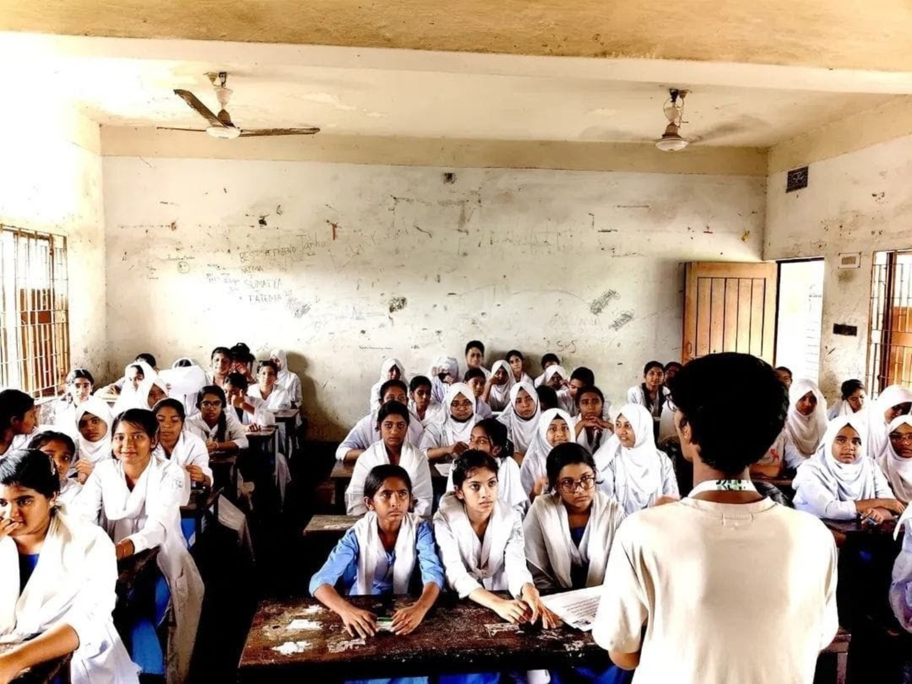
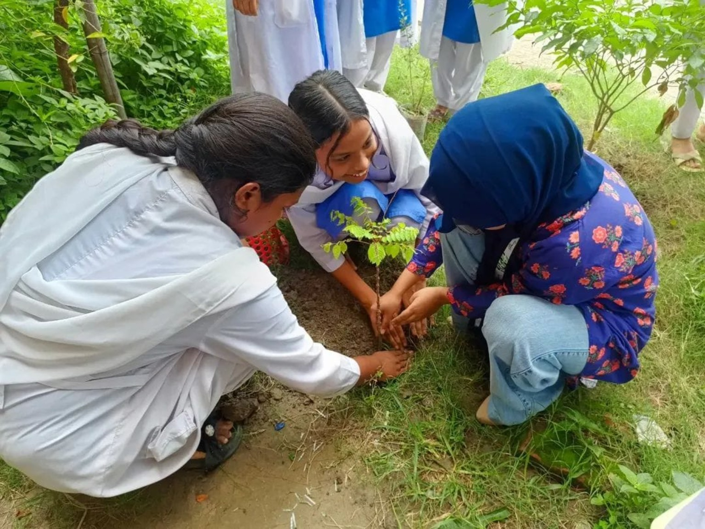
The program moves from understanding climate challenges to personal stewardship, reporting and recognition.
Young environmental stewards explore local and global climate problems, their causes and possible solutions.
The learning expands into biodiversity, food security, reporting and the role of citizen power.
Young environmental stewards receive a tree or plant and begin a 21-day period of care and observation.
Young environmental stewards document their plant care, submit a report, receive evaluation and can be recognized with prizes.
Documented Planting For The Future activities combine climate education, plant stewardship, follow-up and practical responsibility.
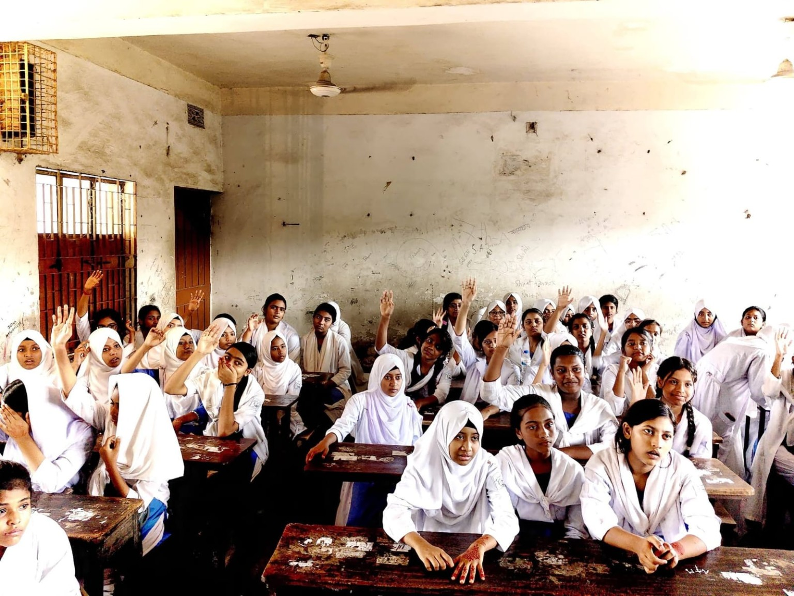
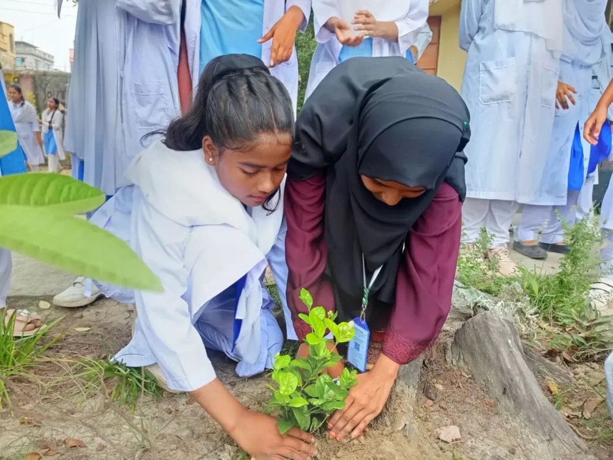
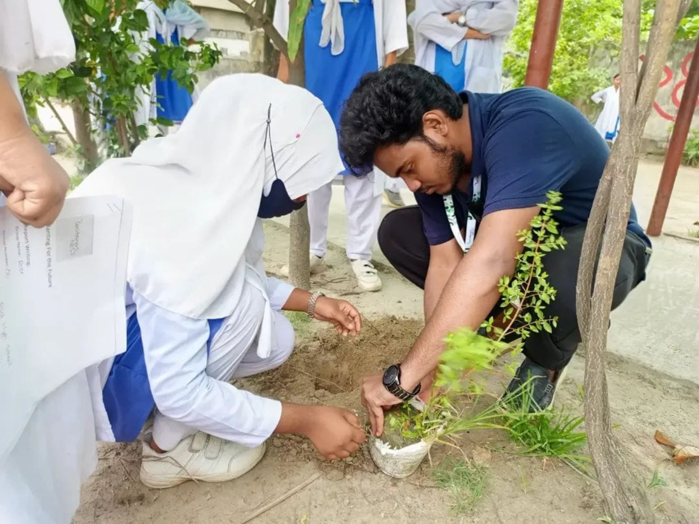
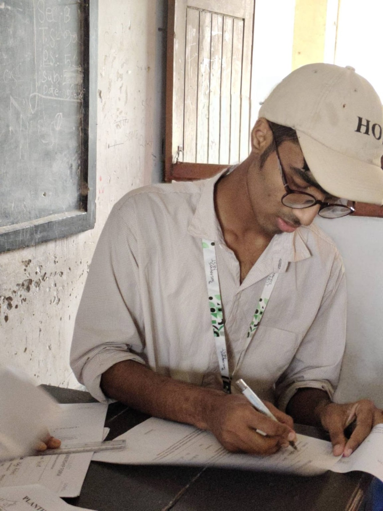
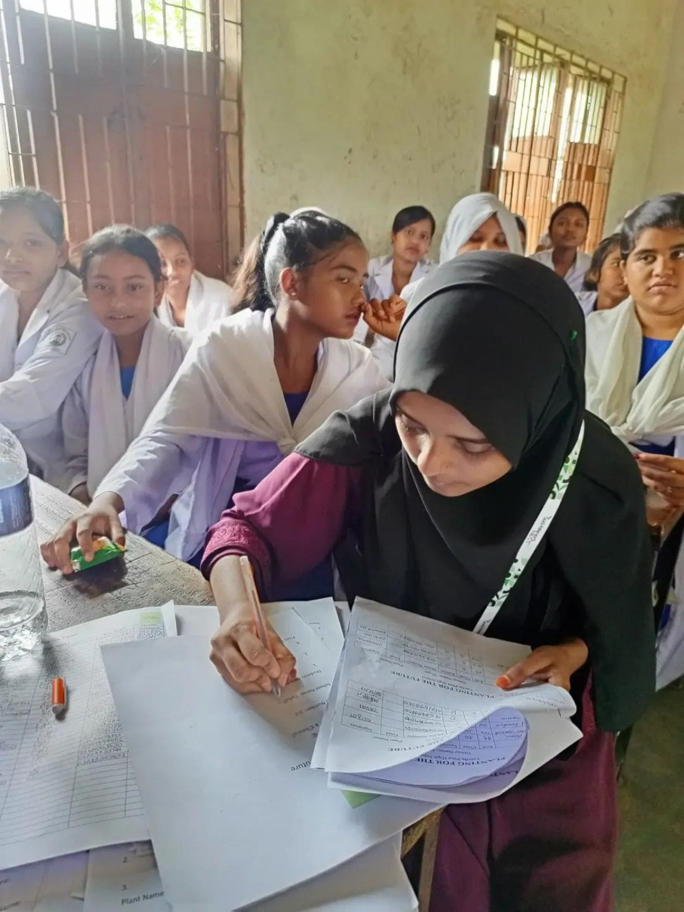
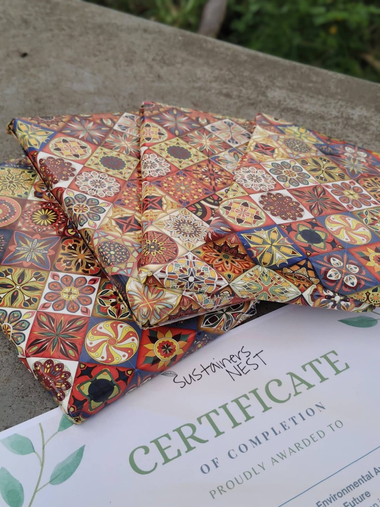
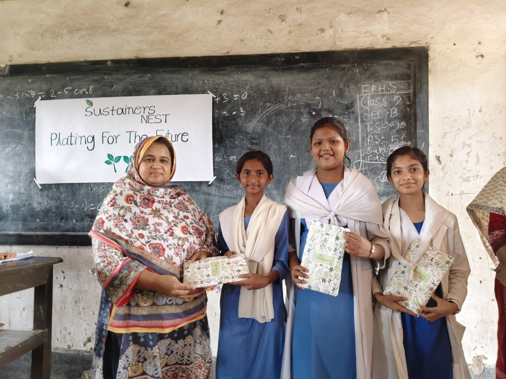
21 May & 11 June 2026
The activity began with climate learning on 21 May 2026. Young environmental stewards explored climate problems, solutions, biodiversity, food security, reporting and citizen power before receiving trees or plants to care for.
After 21 days of stewardship, the program returned on 11 June 2026 for report review, evaluation and recognition. Young environmental stewards who completed the process were acknowledged with prizes.

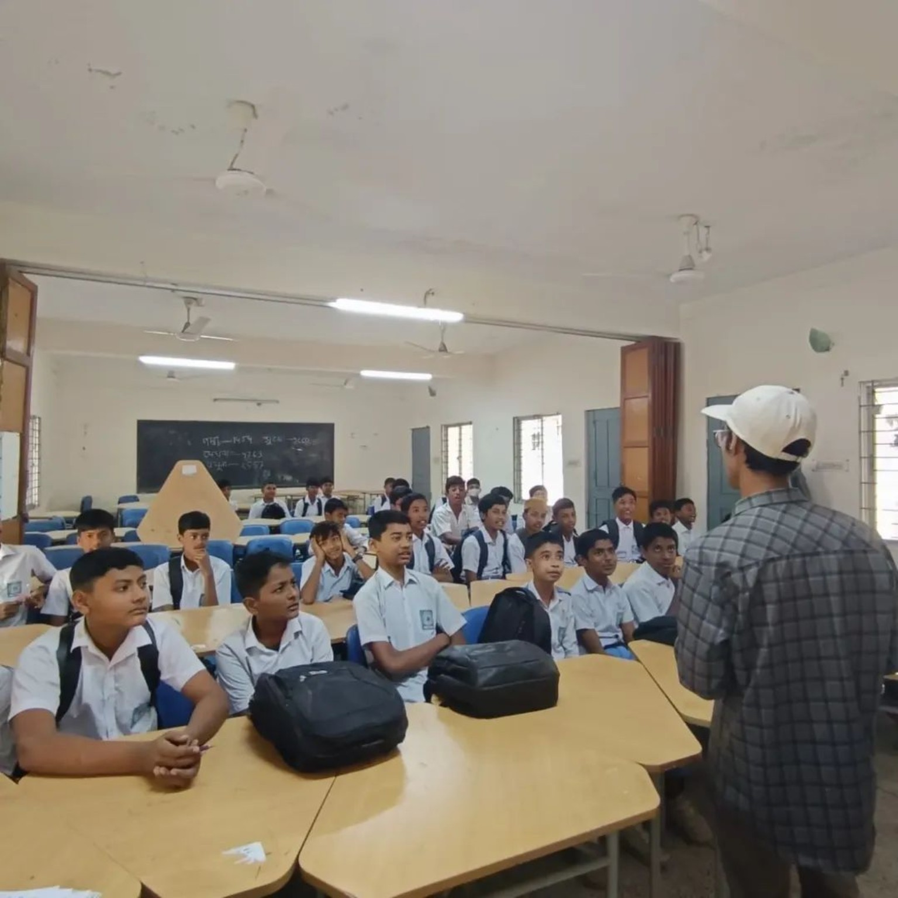
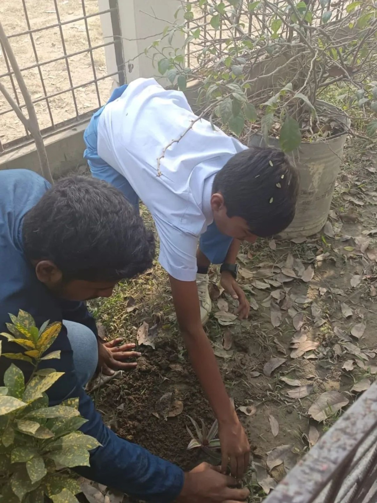
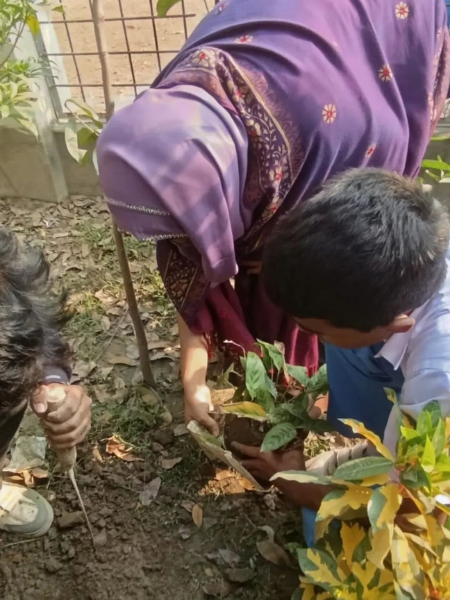
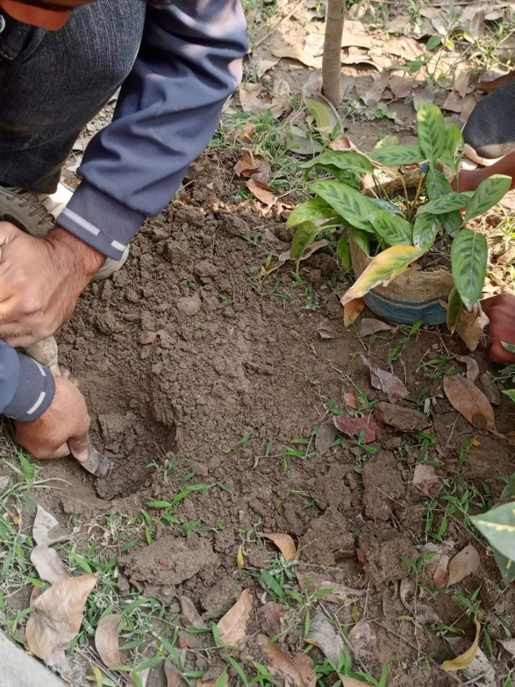
26 January & 17 February 2026
The first session introduced young environmental stewards to climate problems, practical solutions and the responsibility they can take in protecting their environment.
Young environmental stewards then moved from learning to stewardship through hands-on planting and care. The second part on 17 February 2026 continued the project through follow-up, reflection and practical engagement with the plants they had been responsible for.
Volunteer, collaborate as an institute or organization, or support a future Planting For The Future activity.